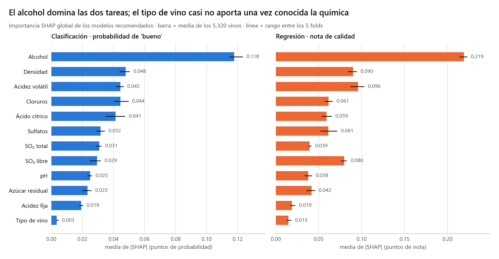
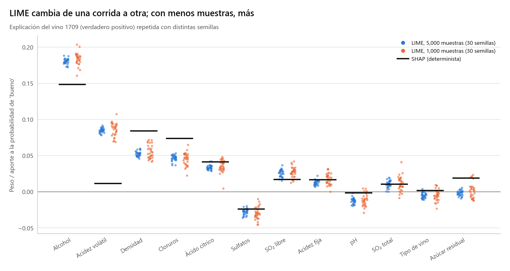
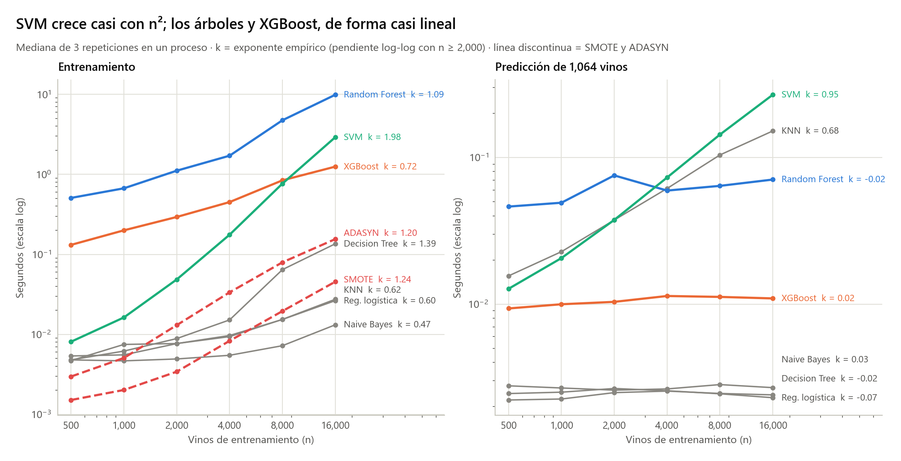
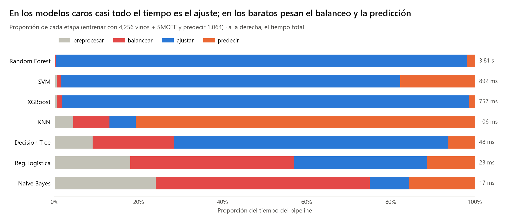
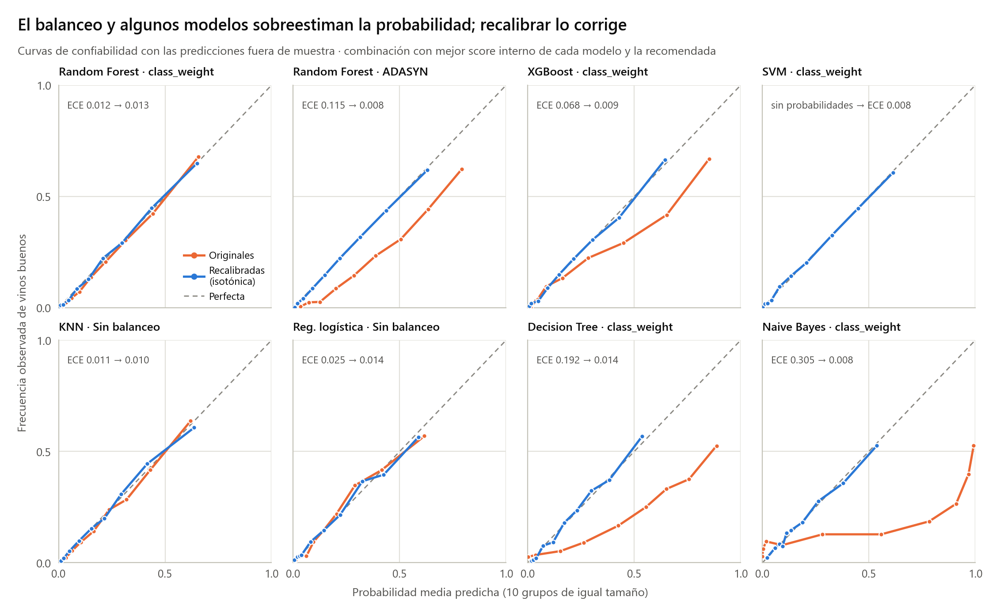
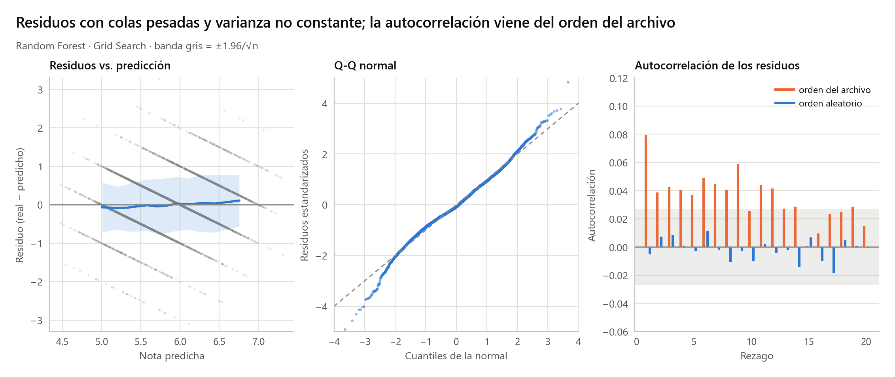
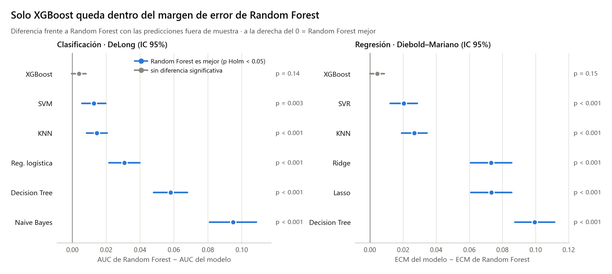
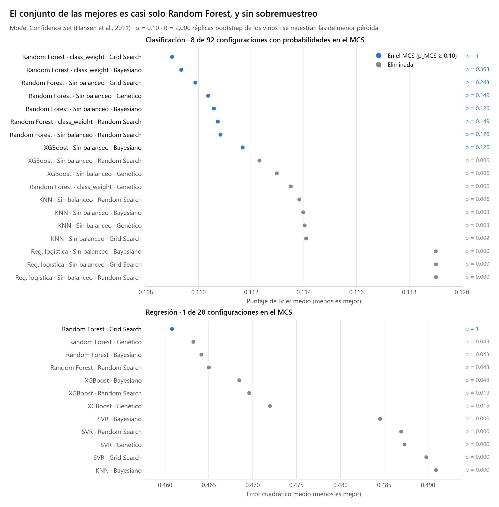
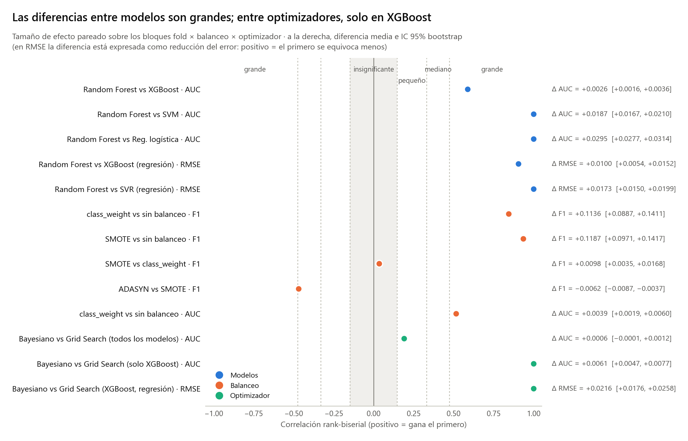

Trazabilidad de las correcciones del Entregable 2#
La retroalimentación del Entregable 2 reconoció la base del trabajo (136 combinaciones evaluadas con validación anidada 5 × 3) y señaló lo que faltaba: interpretabilidad con SHAP y LIME, optimización computacional con análisis de complejidad y perfilamiento, calibración, análisis de residuos, pruebas de DeLong y MCS, tamaños de efecto, versiones fijadas del entorno y una tabla maestra consolidada. Todas esas observaciones se atendieron con código y resultados nuevos en el repositorio del Entregable 2 (modelado_entregable2/modelado/notebooks/02 a 06), y el Entregable 3 las extiende al modelo original.
Tabla de trazabilidad#
Observación del docente |
Acción realizada |
Ubicación en el libro |
Evidencia |
|---|---|---|---|
No hay interpretabilidad con SHAP |
SHAP exacto (TreeExplainer) sobre las 5320 predicciones fuera de muestra de Random Forest y XGBoost; en el Entregable 3, SHAP del modelo original con un explicador propio de sus árboles |
Interpretabilidad: SHAP y LIME; Interpretabilidad: SHAP del modelo original frente al mejor benchmark |
Figura 1; tabla |
No hay LIME |
LIME en tres casos (verdadero positivo, falso negativo, falso positivo), estabilidad con 30 semillas y acuerdo global con SHAP en 200 vinos |
Figura 2; |
|
No hay análisis de complejidad |
Complejidad teórica de los 7 modelos y del remuestreo, contrastada con el exponente empírico del tiempo frente a n; complejidad demostrada del BOF |
Complejidad y perfilamiento; capítulo 5 (complejidad) |
Figura 3; |
No hay perfilamiento |
|
Figura 4; |
|
No hay calibración |
Curvas de confiabilidad, ECE, Brier, pendiente de calibración y recalibración (Platt e isotónica); en el Entregable 3, calibración de los 10 modelos comparados y calibración fuera de bolsa propia del BOF |
Figura 5; |
|
No hay análisis de residuos |
Normalidad (Jarque–Bera), varianza (Breusch–Pagan, White), autocorrelación (Ljung–Box, Durbin–Watson) e independencia (BDS) de los residuos de la regresión, en el orden del archivo y en orden aleatorio |
Figura 6; |
|
La estadística se limita a Friedman y Nemenyi: falta DeLong |
DeLong por pares (algoritmo de Sun y Xu) entre los 7 modelos y para balanceo y optimizador; en el Entregable 3 es la prueba P4 del protocolo |
DeLong, MCS y tamaños de efecto; capítulo 6 |
Figura 7; |
Falta MCS |
Model Confidence Set (Hansen, Lunde y Nason) con el Brier por vino en clasificación y el error cuadrático en regresión |
Figura 8; |
|
Faltan tamaños de efecto |
W de Kendall de cada Friedman, rango-biserial y d de Cohen pareados con intervalos bootstrap; en el Entregable 3, delta de Cliff |
DeLong, MCS y tamaños de efecto; capítulo 6 |
Figura 9; |
Las versiones del entorno no están fijadas |
|
capítulo 10 |
archivos del repositorio |
Falta una tabla maestra consolidada |
|
capítulo 10 |
|
(Entregable 3) Auditoría de fuga |
Verificación programática de cada riesgo de fuga y validación por bloques del archivo |
tabla de auditoría del capítulo 2 |
Interpretabilidad: SHAP y LIME#


Figura 1 Importancia SHAP global de Random Forest en clasificación y regresión (Entregable 2). El alcohol domina; le siguen la densidad, la acidez volátil y los cloruros.#


Figura 2 Estabilidad de LIME: con 1000 muestras, las tres variables principales cambian entre semillas; con 5000 se estabilizan. SHAP, en cambio, es exacto y determinista para árboles.#
Complejidad y perfilamiento#


Figura 3 Tiempo de entrenamiento y de predicción frente al tamaño de la muestra (escala log-log). La pendiente es el exponente empírico de la complejidad; SVM es el único que crece casi como \(n^2\).#


Figura 4 Reparto del tiempo de una evaluación de la búsqueda según cProfile: más del 70 % se va en el código compilado de cada librería; el preprocesamiento y el remuestreo pesan poco.#
Calibración#


Figura 5 Curvas de confiabilidad de la mejor combinación de cada modelo antes y después de recalibrar (Entregable 2).#
Residuos de la regresión#


Figura 6 Residuos de la regresión recomendada: varianza no constante, colas pesadas y autocorrelación en el orden del archivo que desaparece al desordenar los vinos (posibles lotes).#
La autocorrelación en el orden del archivo motivó una verificación nueva en el Entregable 3: la validación por bloques consecutivos del archivo (Auditoría de fuga de información).
DeLong, MCS y tamaños de efecto#


Figura 7 Diferencia de AUC (DeLong) y de error cuadrático (Diebold–Mariano con corrección de Harvey, Leybourne y Newbold) de cada modelo frente a Random Forest, con intervalos del 95 % y p-valores ajustados por Holm.#


Figura 8 Model Confidence Set con α = 0.10: en clasificación quedan configuraciones de Random Forest con class_weight o sin balanceo y una de XGBoost; ninguna con SMOTE o ADASYN.#


Figura 9 Tamaños de efecto (rango-biserial pareado e intervalos bootstrap) de las comparaciones principales del Entregable 2.#
¿Cambiaron los resultados?#
Las correcciones agregaron análisis; no cambiaron ningún resultado del Entregable 2. Se verificó que el código del Entregable 3 reproduce exactamente el Entregable 2: con las mismas particiones (semilla 42), los 7 modelos benchmark dan el mismo AUC en el pliegue externo 1 (diferencia 0) y los mismos hiperparámetros.
Sí cambió un criterio, como pide el enunciado del Entregable 3: la mejor combinación de cada modelo se elige ahora por el AUC medio del bucle externo, mientras que el Entregable 2 la elegía por el puntaje de la validación interna. El cambio altera la combinación elegida en 5 de los 7 modelos y no altera el orden de los modelos. En Naive Bayes hay un empate exacto de AUC entre no balancear y class_weight, porque reponderar las clases solo cambia la probabilidad a priori y no el orden de los vinos; se conservó class_weight.
| Modelo | Elegida por AUC externo (E3) | AUC externo | Elegida por score interno (E2) | AUC externo de la elegida en E2 |
|---|---|---|---|---|
| Random Forest | class_weight · Grid Search | 0.8605 | class_weight · Bayesiano | 0.8602 |
| XGBoost | SMOTE · Bayesiano | 0.8578 | class_weight · Bayesiano | 0.8575 |
| SVM | class_weight · Random Search | 0.8479 | class_weight · Bayesiano | 0.8468 |
| KNN | sin_balanceo · Bayesiano | 0.8449 | sin_balanceo · Bayesiano | 0.8449 |
| Regresión Logística (L1/L2) | sin_balanceo · Bayesiano | 0.8284 | sin_balanceo · Bayesiano | 0.8284 |
| Decision Tree | sin_balanceo · Random Search | 0.8122 | class_weight · Bayesiano | 0.8011 |
| Naive Bayes | class_weight · Bayesiano | 0.7645 | class_weight · Grid Search | 0.7645 |
Elegir por el AUC externo favorece un poco a los benchmarks (la misma partición sirve para elegir y para medir), así que es una elección conservadora para la comparación con el modelo original: el modelo original no se elige así, sino con su propia búsqueda interna.